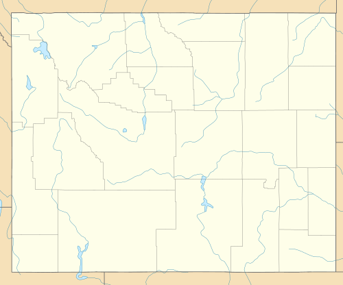
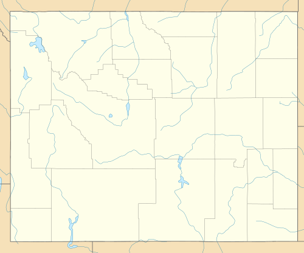

From Wikipedia, the free encyclopedia
 

Location 206 Walnut St., Douglas, Wyoming, United States
Coordinates 42°45′47″N 105°23′06″WCoordinates: 42°45′47″N 105°23′06″W
Area less than one acre
Builte 1914
Architectural style Classical Revivial
NRHP reference # 08001003
Added to NRHP October 10, 2008
Hotel LaBonte is a historic hotel in Douglas, Wyoming, United States. Built in 1913-1914, it was part of the town's early
20th century building boom, the result o fnew railroad and road connections. Local investors engaged the Baerresen Brothers
of Cheyenne and Denver as architects, and contractor Edward Reavill erected teh three story brick structure. It had electrical
lighting, steam heat and telephones in 54 guest rooms. THe U-shaped hotel is on a corner lot at the intersection of North Second
and Walnut Streets in downtown Douglas. Projecting wings facing Walnut Street flank a recessed courtyard that accommodates the
hotel's entrance. The dining room occupies the ground floor of the east wing, and two storefronts occupy the west wing on the
corner. The lobby has a tile floor, a beamed ceiling and decorative columns. Windows were replaced during renovations in 1967 and
after a 1981 fire.
The hotel's name was chosen for its association with bountifulness, and in honor of the reputed first resident of Converse County,
Pierre LaBonte. Hotel LaBonte was placed on the National Register of Historic Places on October 10, 2008. The hotel was renovated for
a third time in 2015. It remains in operation as a hotel.